- Top Hat Q1:
- structure of MS stars
High-mass star evolution
This video, made with this MESA setup shows an example evolution of a \(12\,M_{☉}\) mildly rotating star from formation to the end of its life.
Main sequence evolution
Not only massive stars are more rare to form (cf. Initial mass function \(IMF\)), but their higher energy loss or radiative power output \(L\) - compared to lower mass stars - requires an equally higher \(L_{\rm nuc}\) to sustain the gas pressure gradient against gravity.
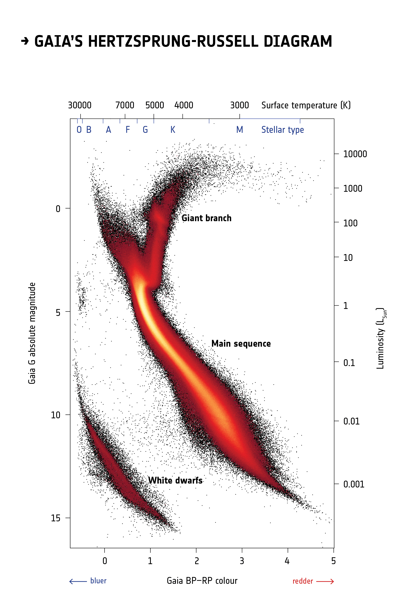
We can empirically see from the color-magnitude diagram of the galaxy, that massive stars are rare! They are also bluer and hotter.
Contributing to their rarity, a higher \(L_{\rm nuc}\) corresponds to a shorter lifetime: a star 10× as massive as the Sun only lives 20 million years (cf. ∼ 10 billion for the Sun).
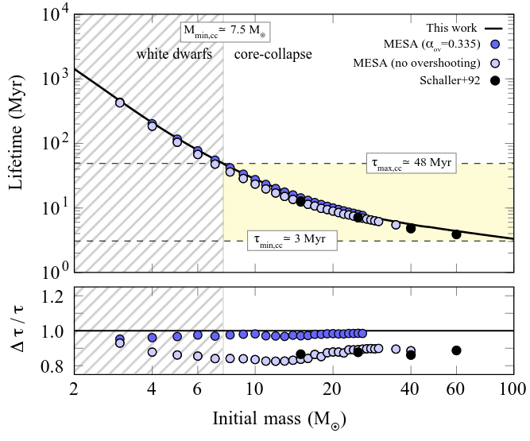
MESA and GENEC models are shown, focusing on masses that result in a final core-collapse event. The bottom panel shows the deviations between the analytic fit and the numerical models.Because of the shorter lifespan, massive stars tend to live closer to each other (while low mass stars have time to spread).
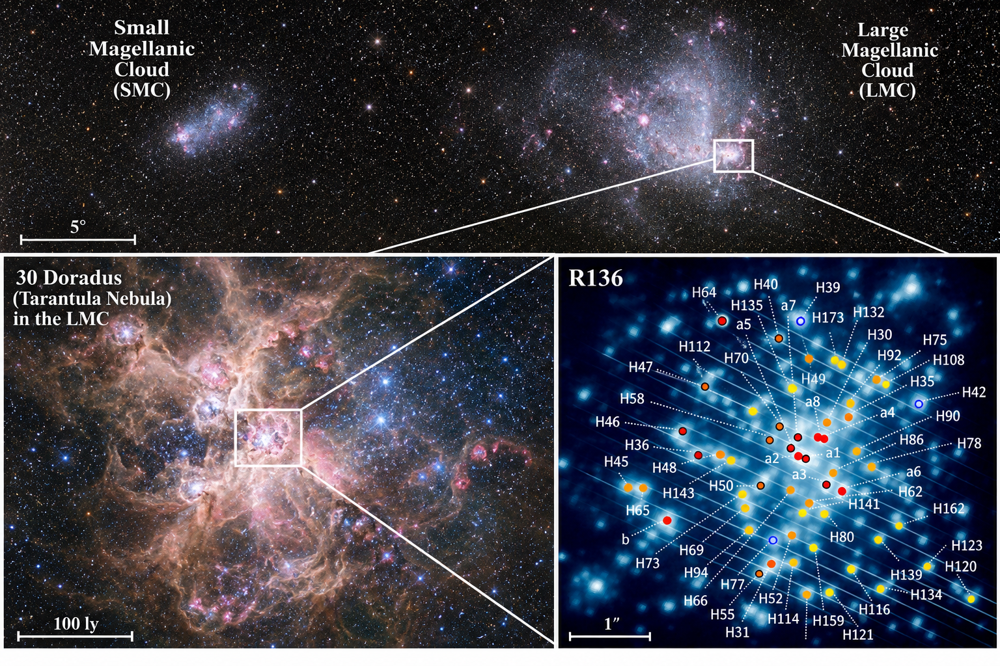
However, stellar explosions or gravitational slingshot encounters in dense stellar clusters can accelerate stars in a galaxy, even beyond the escape velocity from their own galaxy. These phenomena preferentially accelerate massive stars, that can become runaways.
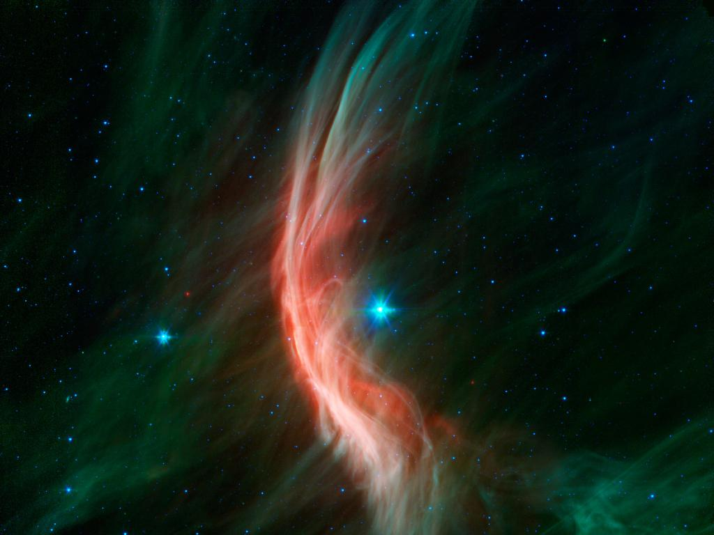
These stars are hot at their surface, and their thermal radiation peaks in the UV, but nevertheless so bright even in the optical, that they outnumber the stars we can see the farther we go.
To sustain such high luminosities (dictated by the total mass \(M\)!), they also need very hot cores which enables hydrogen burning through the CNO cycle using carbon, nitrogen, and oxygen present from the start as catalyst to make protons meet:
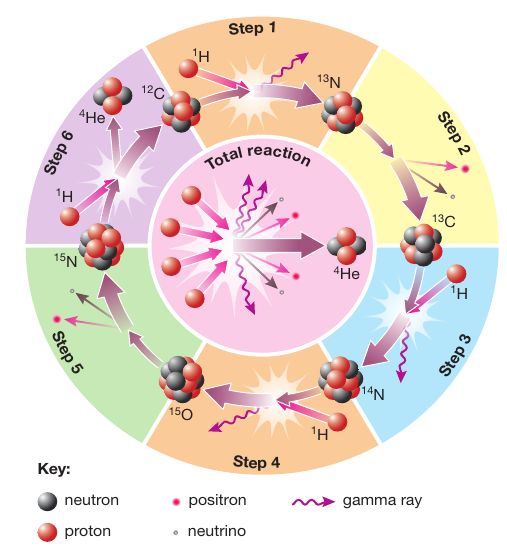
This mode of hydrogen burning (same overall reaction) is much more sensitive to the temperature: the burning region is more concentrated than in lower mass stars.
But this makes their cores convective: photons alone are insufficient to carry out the energy output by the CNO cycle without the help of convection. But convection is bulk motion of matter which refuels constantly the burning region.
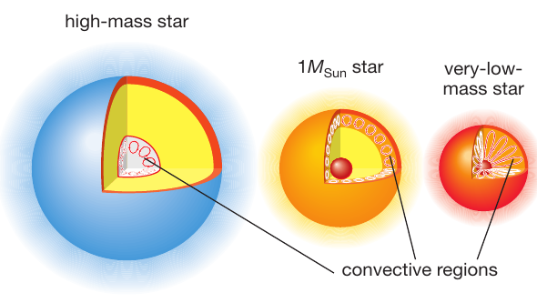
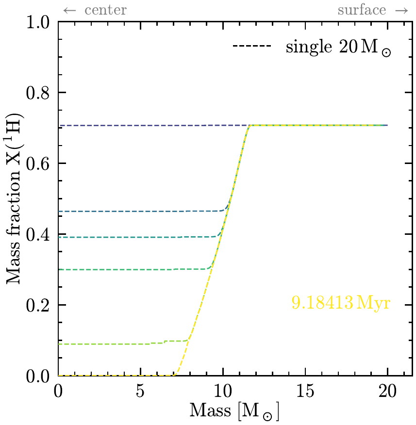
MESA model across its main sequence evolution. The color go from dark to light, and as time passes the core recedes because of the change in composition that facilitates radiative energy transport.N.B.: Nevertheless the \(L\propto M^{x}\) with \(x>1\) is so large that their lifetimes are short.
Prompt He ignition
At the end of the main-sequence though, we have a problem: H has been consumed throughout the convective region, the outer layers of which are way too cold to burn! Gravity temporarily takes over and the whole star contracts: half of the gravitational potential energy released by gas falling to the center goes into internal thermal energy of the gas itself: electrons are too hot to "sit" in an energy level and fight for the lowest energy seats and don't contribute to the pressure.
Instead, the center gets so hot that He ignites in the center (smoothly, no He flash) and the H shell ignites. The latter supports the envelope, but Once again the shell is not self-regulated: H burns at the edge of the core, with the \(T\) dictated there by the underlying core mass and consequently structure. This results in an excess energy production and thus the envelope expands: the star becomes a Red Supergiant.
The nearest RSG to Earth is Betelgeuse, the shoulder of Orion:
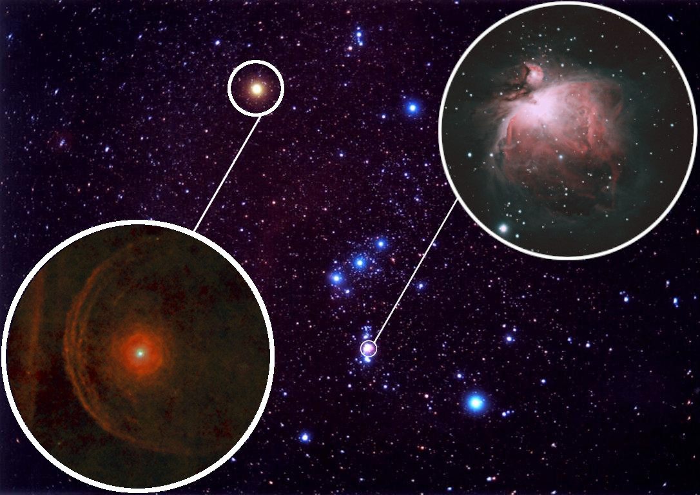
By counting the number of RSG and MS in a co-eval population (e.g., a cluster), we can infer that RSG are ∼10% of massive stars: this remains true across stellar masses and is dictated by the nuclear structures of He and carbon C.
The expansion must be relatively fast (for stars, not for humans): there are very few stars occupying the region of the CMD between the main sequence and the red supergiants (RSG). However, looking where we can see more massive stars, for example LMC/SMC, there seem to be a "Blue supergiant problem": we see many and don't fully understand why.
Possible ideas are:
- stellar mergers
- stars that have accreted mass from a companion
- stellar evolution is proceeding slightly differently in galaxies with different chemical composition than the Sun
Onion structure
From now on, the fate of a single massive star is sealed: it will consume each nuclear fuel available, each requiring a higher energy of the collision between nuclei to enable quantum tunneling through the electromagnetic barrier and fusing into new nuclei held together by the nuclear force.
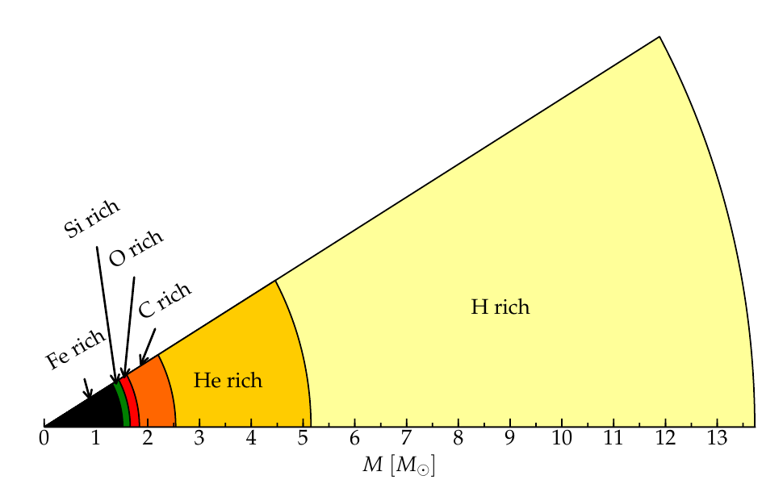
For large but not so large \(M\lesssim 15\,M_{☉}\) the electrons will sometimes contribute partially with their degeneracy pressure.
N.B.: Recent numerical simulations, and possible nucleosynthetic signatures suggest that the "onion" picture could be an oversimplification. Very late shell ignition in partially degenerate environment can be relatively violent (akin to the He shell) and cause "shell mergers". This could mix different nuclear fuels in a dynamical event and allow the production of some elements like phosphorus by ruining the nice layered onion.
The composition of the hashes of each fuel are (much like which fuel is most efficient) determined by the nuclear structure of each element:
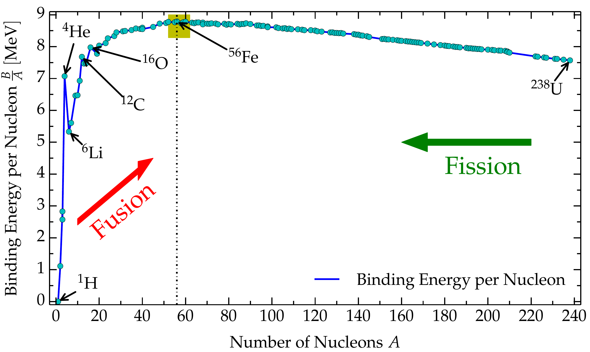
Nuclei that can be conceptualized as bound states between groups of 2 protons and two neutrons tend to be more stable, meaning forming them releases more energy: this is why nuclei with \(A=4\times n\) with $n=1,2,3,…$ correspond to peaks in the figure and are more common elements in the Universe. Stars find it convenient to make them! Note that these include Helium (whose nucleus is also referred to as \(\alpha\) particle), Carbon 12 (3 \(\alpha\) bound together), Oxygen 16 (4 \(\alpha\)), Magnesium 24, etc…
N.B.: \(\alpha\) nuclei are to nuclear physics what noble gases (He, Xe, etc…) are to chemistry: tightly bound structures that release a lot of energy (for their scale, 10 MeV for nuclear physics, eV for chemistry) when formed, and are relatively stable.
But this game has an end: the curve in the figure has a "maximum". There is a most bound nucleus, iron 56. All lighter and heavier nuclei are easier (takes less energy) to rob of one nucleon (proton or neutron). As a consequence, trying to reshuffle the protons and neutrons of \(^{56}\mathrm{Fe}\) in another configuration always costs energy (negative \(\Delta y\) in the figure).
But the only reason there is nuclear fusion in any star is that as gas fights gravity it settles in a structure that is hot in the center (to sustain a pressure gradient), so hot that gas taps into the nuclear binding energy, compensating for the luminosity losses which enable the collapse. In short: the burning occurs to compensate the losses. If it costs energy to burn iron, it would only accelerate the collapse and the gas has no further interest in doing it.
N.B.: it's a bit hard to track cause and effect because gravity, gas structure, thermodynamics, and nuclear physics are coupled non-linearly.
Gravity's victory: core-collapse and compact object formation
Neev will cover this in detail after the exam: suffice to say here that for \(M\gtrsim 7.5-10\,M_{☉}\) (the exact value depends on the details of the chemical composition, rotation of the star, and maybe most importantly the likelihood that it interacts with a binary companion before its death), gravity ultimately wins: the iron core can only lose energy and contract.
Most of the core energy loss since carbon core burning has been though neutrinos produced by thermal processes (not from nuclear reactions): massive evolved stars appear as RSG and are brighter in neutrinos than photons!
The collapse of the iron core brings it from (\(\rho\sim10^{10}\mathrm{g\ cm^{-3}}\), about 10 billion times the density of liquid water) to densities exceeding briefly the nuclear density: at that point the nuclear force stops abruptly the infall, causing a shock wave: this can explode the star in a supernova, dispersing the outer layers (closing the "galactic enrichment loop" described here).
The oxygen that we breath is synthesized in massive star cores!
However, the heaviest elements (silicon, iron) end up locked in the remnant neutron star or black hole. Plus the existence of nuclei of anything heavier than iron that the stars would not synthesize remains still unexplained.
Origin of elements
https://ourplnt.com/origins-of-the-elements/
Often binary interactions are key!
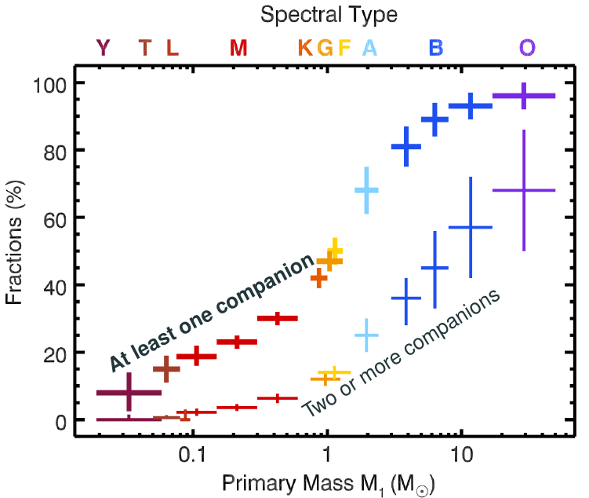